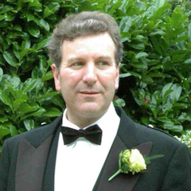

Multicore is just the start of an ongoing revolution in computer hardware. Manycore machines with hundreds of cores are already being produced, and future systems may well have thousands or even millions of cores, a true megacore era.
Dealing with the scale and complexity of megacore (even manycore) systems is incredibly hard using the typical, concurrency-based, approaches that are used today. It becomes almost impossible if a system mixes e.g. CPU and GPU cores. Fortunately, functional programming languages, like Haskell and Erlang, offer huge potential for easy, scalable, and bug-free parallelism.
This talk will explore current hardware trends, highlight some recent research results, and show how easy-to-use functional programming techniques can help achieve long-term portability, with built-in scalability, across both current and emerging computer architectures.
Talk objectives: The talk aims to expose important current research challenges in scalable parallel programming in an approachable way, explaining what are the main issues, and how functional programming techniques can help deal with them. It aims to motivate the audience to use good programming techniques, to be aware of pitfalls and bear-traps, and to embrace new technologies. I welcome and encourage interaction and discussion between the speaker and the audience.
Target audience: The talk should be interesting to practitioners and enthusiasts, whether or not they currently deal with parallel programming, and whether or not they are functional programers. It will use some functional programming language notation, e.g. Haskell and/or Erlang, but any specific language technology will be introduced in a general way.
Kevin Hammond is a full professor of Computer Science at the University of St Andrews, where he leads the functional programming research group. His research interests lie in programming language design and implementation, with a focus on parallelism and real=time properties of functional languages, including modelling and reasoning about extra-functional properties. In total, he has published around 100 research papers, books and articles, and held over 20 national and international research grants, totalling around £11M of research funding. He was a member of the Haskell design committee, co-designed the Hume real-time functional language, and is co-editor of the main reference text on parallel functional programming. He currently coordinates the RePhrase project, a 3-year EU research project that aims to develop new refactoring technology targeting heterogeneous parallel architectures. Kevin is a keen hill-walker, whisky connoisseur and enjoys early music.
Github: kevinhammond
Twitter: @khstandrews